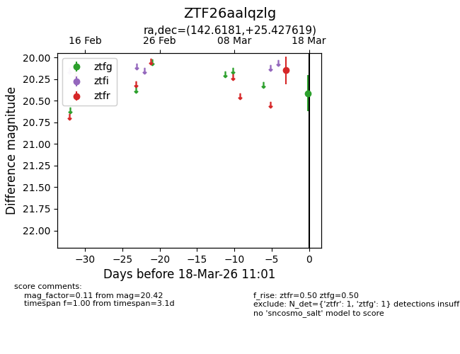
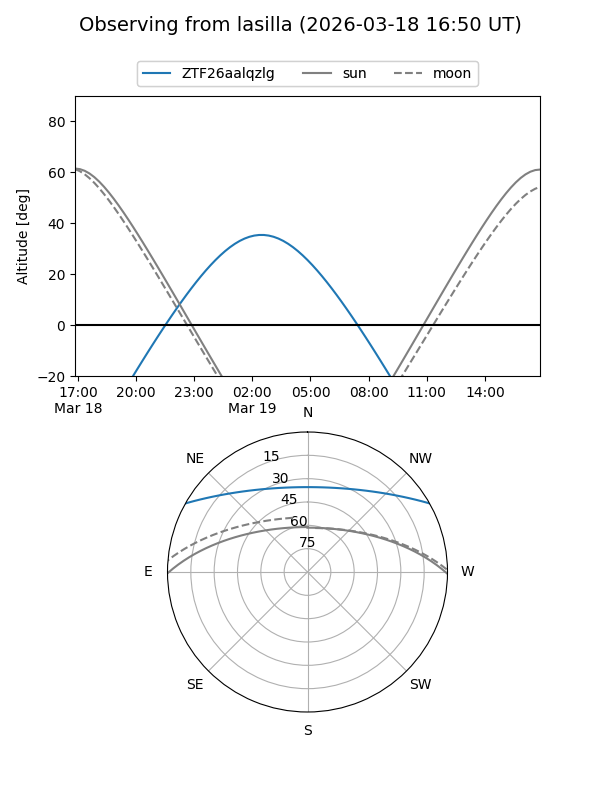
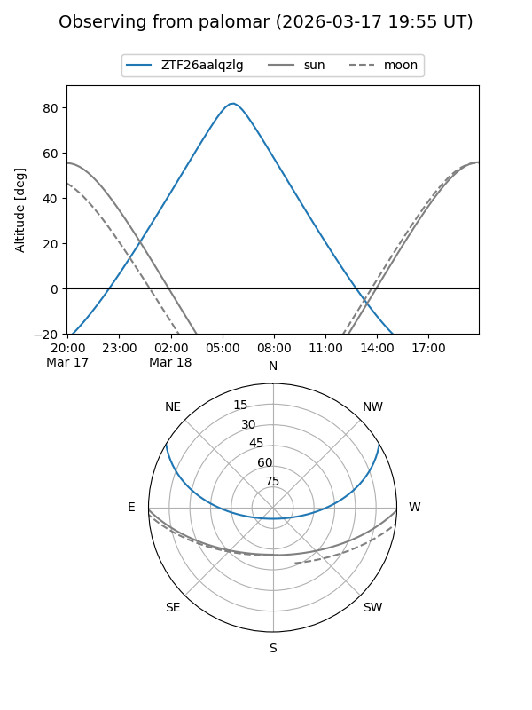

ZTF26aalqzlg
Target ZTF26aalqzlg at 2026-03-18 11:03
Aliases and brokers:
FINK: link
Lasair: link
ALeRCE: link
alt names
ZTF26aalqzlg (ztf,fink_ztf)
Coordinates:
equatorial (ra, dec) = 142.6181,+25.42762
equatorial (HMS+DMS) = 09:30:28.35,+25:25:39.43
galactic (l, b) = (203.2252,+45.22216)
Flags:
Photometry:
last ztfg=20.42, ztfr=20.15
1 ztfg, 1 ztfr detections
Lightcurve

Visibility


Additional plots